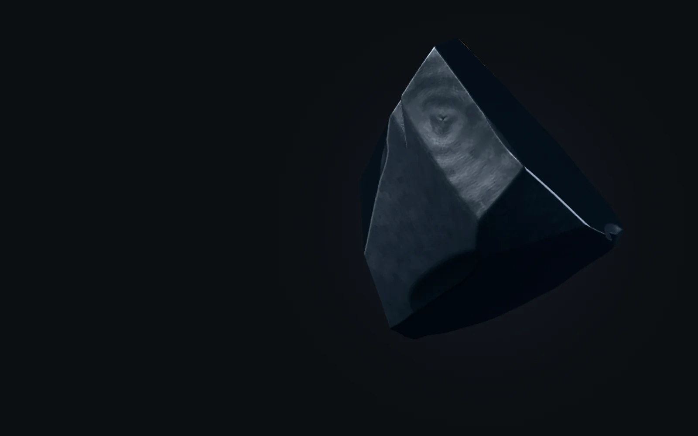
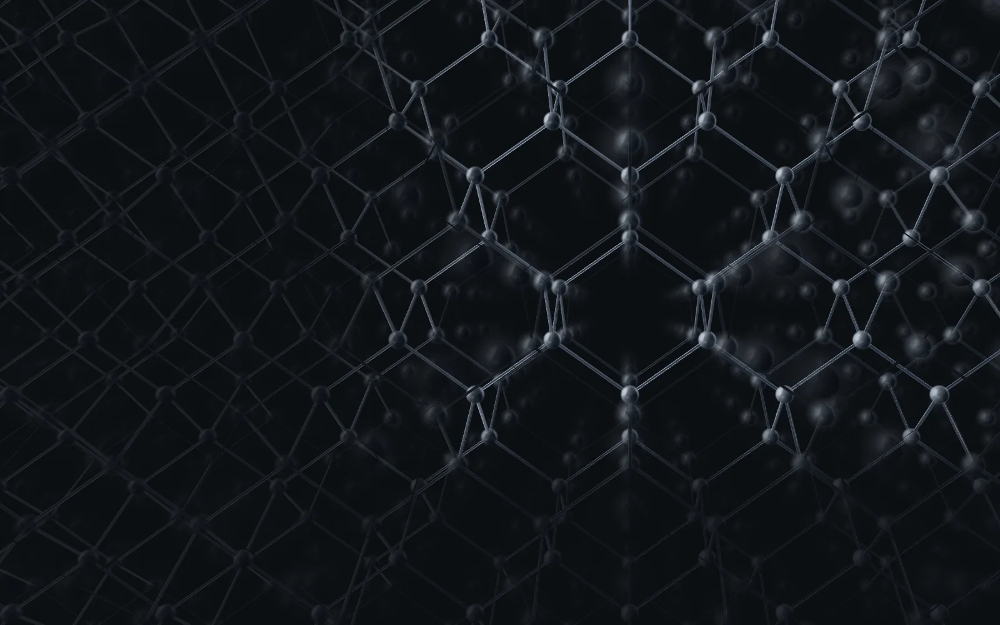
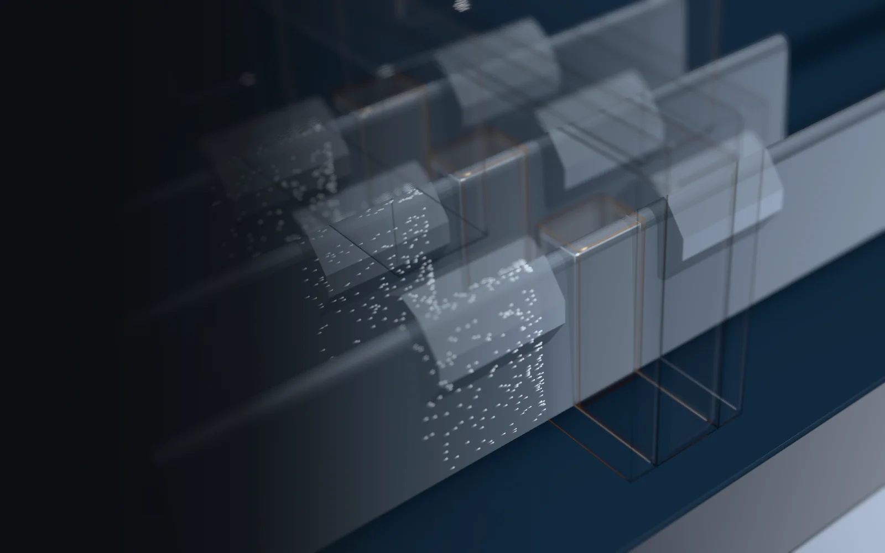
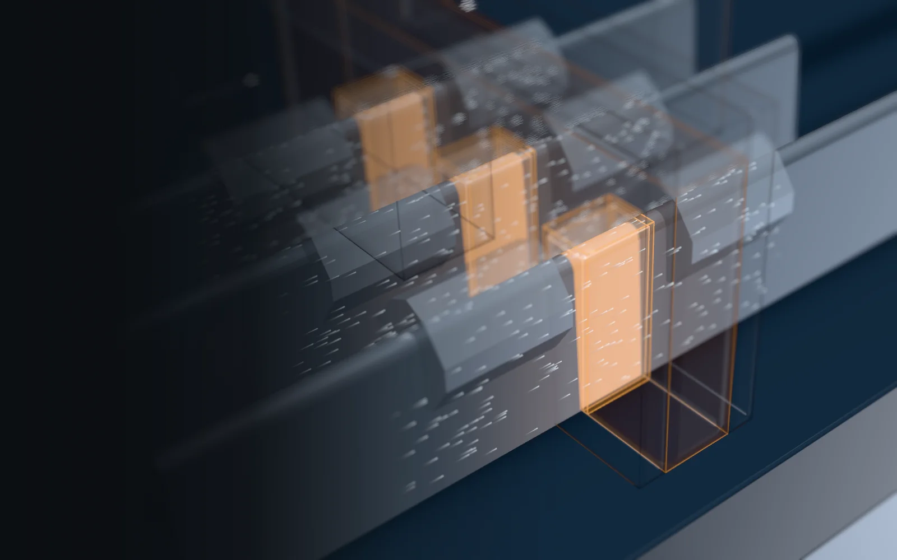
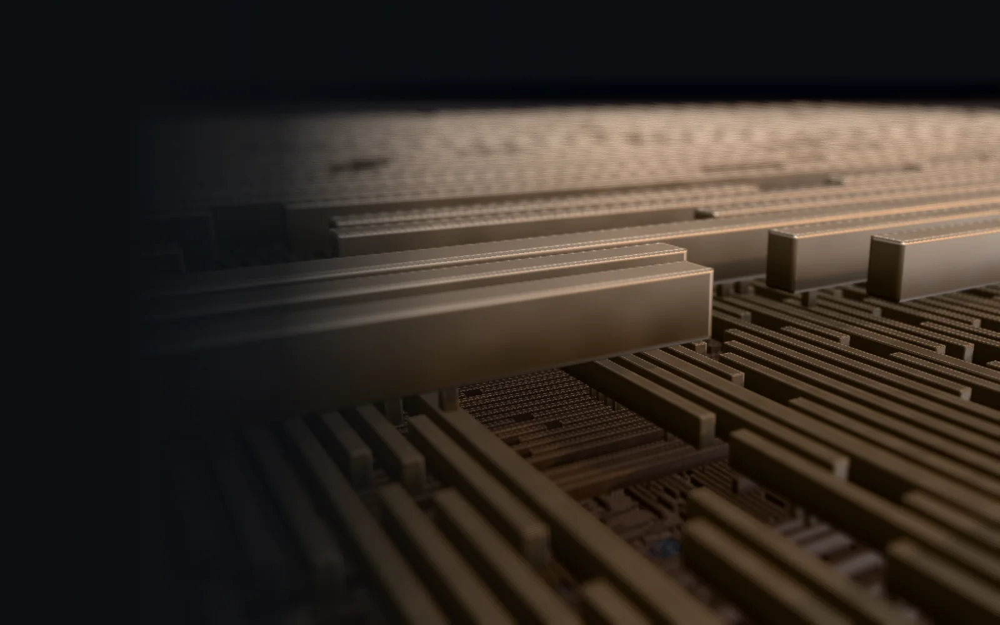
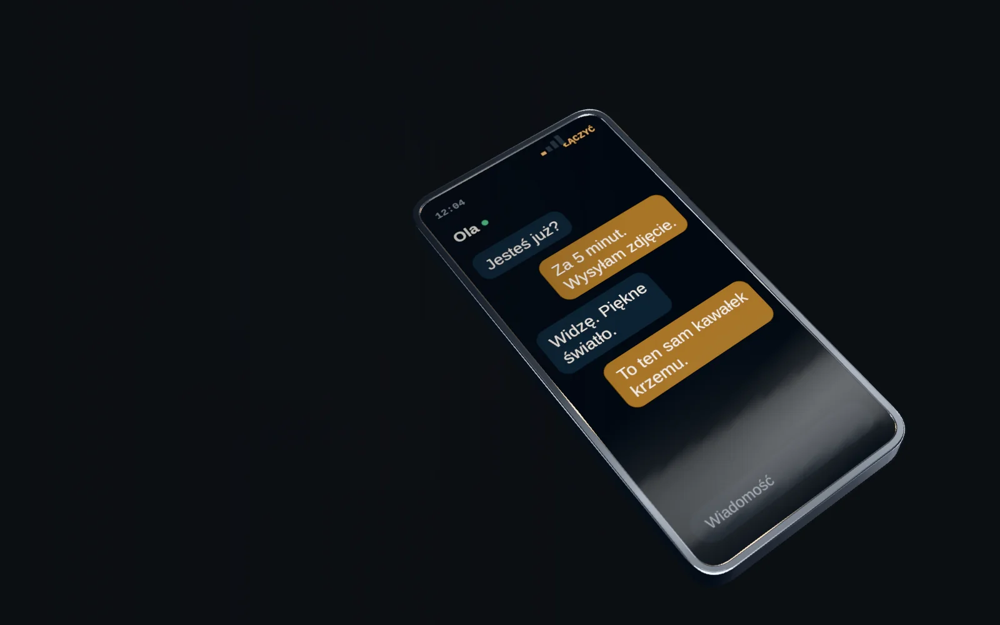
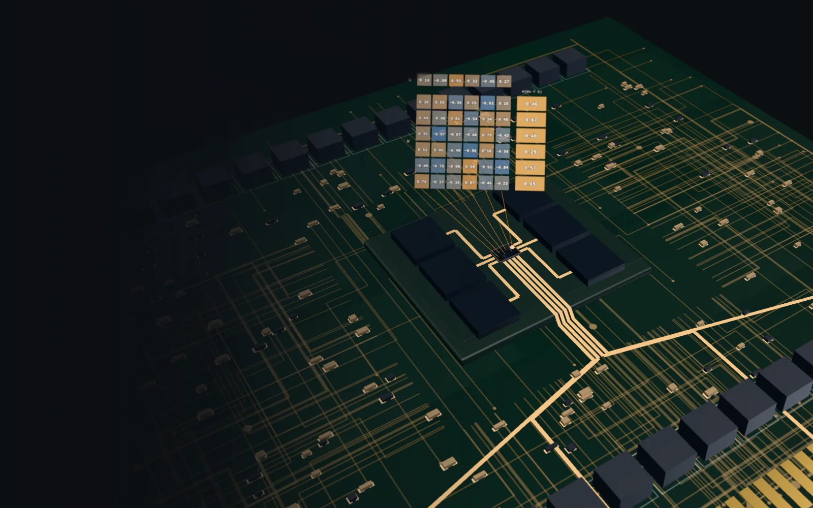
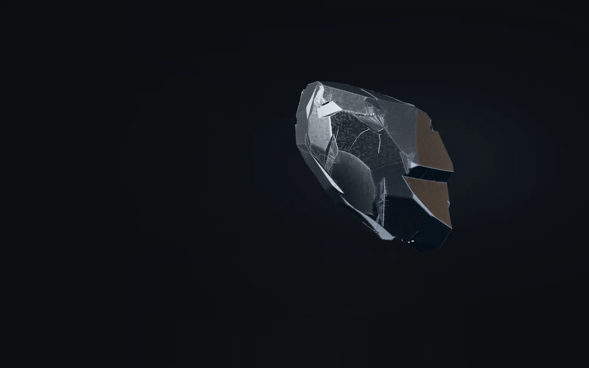

+ PIERWIASTEK ZMIANY 001
Krzem.
Fundament
cyfrowego świata.
Zanim pojawił się pierwszy piksel.
Zanim padło pierwsze pytanie do AI.
Była materia.
Niepozorny pierwiastek.
Niezwykłe możliwości.
01 / MATERIA
Od natury.
Do precyzji.
W przyrodzie krzem jest związany z innymi pierwiastkami. Elektronika potrzebuje czegoś innego: niezwykle czystego, uporządkowanego materiału.
Redukcja. Oczyszczanie. Krystalizacja.
To proces — nie magia.

0,5 nm
Model kulkowo-pręcikowy. Atomy nie są kulkami, a kryształ rośnie z roztopionego krzemu; ruch frontu jest umowny. Podziałka dotyczy ostrej płaszczyzny, 2 nm przed kamerą.
- 01Kwarc
- 02Oczyszczanie
- 03Monokryształ
- 04Płytka
02 / PRZEŁĄCZNIK
Jeden element.
Dwa stany.
Napięcie przyłożone do bramki steruje przewodzeniem kanału. Z takich przełączników budujemy logikę komputerów.
Kanał nie przewodzi w tym uproszczonym modelu.


- Kontakt
- Bramka
- Dren
- Źródło
- Żebro (kanał)
- Izolator
20 nm
Przekrój uproszczony. Żebra jak w procesie 14 nm, reszta przybliżona, cienkie warstwy pogrubione. Przepływ ładunków to umowna wizualizacja.
03 / SKALA
To nie
jest miasto.
To fragment
jednego układu.
Warstwy struktur. Sieć połączeń.
Miliardy tranzystorów mogą pracować w jednym chipie. Ogrom możliwości w mikroskopijnej skali.

1 µm
Poziomy połączeń bez dielektryka, który w chipie wypełnia przestrzeń między nimi. Narastają w kolejności produkcji, tempo umowne. Najniższe rozstawy jak w procesie 14 nm, wyższe poziomy i wymiary chipu przybliżone.
04 / MOŻLIWOŚCI
Liczyć.
Tworzyć.
Łączyć.
Od komputerów po telefony.
Technologia zmieniła sposób, w jaki pracujemy, tworzymy i jesteśmy ze sobą.
Nie chodzi o urządzenia.
Chodzi o to, co dzięki nim możemy.

1 mm
Ogólny, umowny model urządzenia, bez marki. W skali jest tylko chip; reszta części jest uproszczona.
Ta sama materia.
Nowe możliwości.
05 / INTELIGENCJA
Od Si
do SI.
Model jest matematyczny.
Obliczenia są fizyczne.
Za odpowiedzią modelu stoją liczby i operacje. A pod nimi: układy, energia, dane i praca ludzi.

1 mm
Wizualizacja arytmetyki z demonstracji: te same liczby co w okienku obok. Płytka i chip są umowne; to nie są „myśli” modelu.
Napisz pierwszy wers opowieści.
„Wszystko zaczęło się od rzeczy,
której nikt nie zauważał.”
06 / FUNDAMENT
Przyszłość
ma swój
fundament.
Krzem nie jest całym cyfrowym światem.
Ale trudno opowiedzieć ten świat bez niego.
